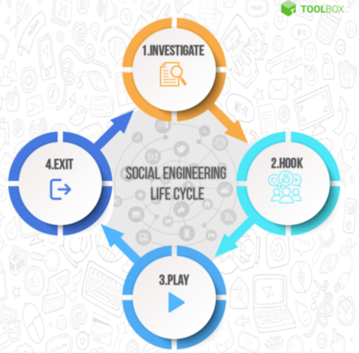
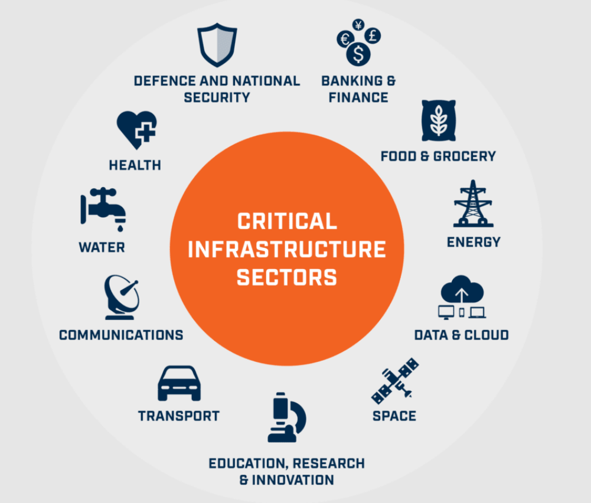

One of the significant challenges affecting a country's ability to conduct
cyberwarfare planning and deployment is the difficulty of cyber
attribution—the ability to identify with certainty who is behind a
cyberattack. This challenge is exacerbated when adversaries deliberately
employ psychological warfare by planting false flags to mislead
attribution, creating confusion, and undermining trust in decision-making
processes. The following steps can be taken to ensure Iran has the best
chance of success when engaging in offensive cyber missions.
Implementation Prior to Each Cyber Action
Technical Preparation
Enhanced Attribution Tools: Invest in advanced machine
learning-based tools for forensic analysis to trace attack vectors
and identify patterns.
Threat Intelligence Sharing: Build alliances with other
nations and private sector entities to create a global database of
threat actors and tactics.
Operational Deception Countermeasures: Establish deception
systems (e.g., honeypots) to detect false flags and separate genuine
indicators from misleading ones.
Psychological Preparedness
Cognitive Bias Training: Train analysts and decision-makers
to recognize and mitigate the effects of psychological operations
(psyops) such as disinformation campaigns.
Resilience Frameworks: Develop a psychological resilience
program for key personnel to prevent panic or erratic
decision-making in response to psyops.
Strategic Policy
Preemptive Diplomacy: Engage in international diplomatic
efforts to establish norms against false-flag operations and ensure
clear channels for verification and response.
Implementation During Each Cyber Action
Cyber Attribution Protocols
Concurrent Verification: Use multiple independent methods
(e.g., IP traceback, malware analysis) to verify the source of the
attack in real time.
Red Team Analysis: Deploy internal red teams to challenge
assumptions and evaluate alternative hypotheses about the attack's
origin.
Response to Psychological Operations
Public Communication Strategy: Counter adversary psyops with
transparent and fact-based communication to reassure the public and
allies.
Real-Time Counterintelligence: Actively monitor and
neutralize adversary efforts to spread false narratives through
social media and other channels.
Tactical Deployment
Controlled Retaliation: Execute proportional and precisely
targeted cyber responses based on verified intelligence.
Adaptive Decision-Making: Incorporate feedback loops to
adjust strategies in response to emerging evidence and adversary
actions.
Implementation Post-Cyberwarfare Action
Analysis and Lessons Learned
Attribution Audit: Conduct a post-action review to reassess
attribution accuracy and refine forensic techniques.
Impact Assessment: Evaluate the psychological and strategic
effects of adversary psyops on decision-making processes and
outcomes.
Strengthening Defenses
Policy Update: Amend cyberwarfare and Iran’s national defense
policies based on lessons learned, focusing on mitigating future
false-flag and psyops threats.
Technical Advancements: Continue to enhance attribution
technologies and deception detection tools.
Public and International Engagement
Transparent Reporting: Share findings about the cyber
operation and adversary tactics with allies and the public to
reinforce trust.
Diplomatic Measures: Work with international organizations to
call out the adversary’s use of false flags and strengthen
collective deterrence.
Conclusion:
By addressing cyber attribution challenges with technical rigor,
psychological resilience, and strategic foresight, Iran can improve its
ability to conduct cyberwarfare effectively while neutralizing the
adversary's psychological weapons.
Challenge 2:

Social Engineering
Overview:
For many nation-states, especially Iran, social engineering is a heavily
sought after tactic due to how it “preys on the fact that humans are the
weakest link in information security” (Saylor Academy). For every cyber
system, humans are responsible for maintaining and securing them. However,
humans are very prone to being manipulated into giving away keys to
confidential information through the exploitation of their trust and
emotions, proving to be the most effective method of breaching as there is
no complete foolproof way to prevent this from ever happening, with as
much as “84% of organizations” falling “victim to a social engineering
attack” in 2022 (La Salle University, 2024). Social engineering can also
be extended to not just target general individuals in an organization, but
to high-profile individuals through the usage of spear phishing or
watering holes attacks.
Plan:
A plan to effectively utilize social engineering as an offensive,
psychological weapon against Iran’s targets are as follows:
Pre-Action Planning
Develop a Social Engineering Policy
The creation of clear guidelines for conducting social engineering
operations.
The definition of ethical boundaries and rules of engagement.
The establishment of protocols for target selection and risk
assessment.
Build Specialized Teams
The recruitment and training of experts in psychology, cultural
studies, and linguistics.
The formation of dedicated individuals for putting together
persuasive narratives and deceptive content.
Implement Advanced Tools
The development of AI-powered systems for generating convinced
phishing emails and social media profiles.
The creation of software for automating and scaling social
engineering campaigns.
During-Action Planning
Deploy Multi-Vector Attacks
The combination of various social engineering tactics for maximum
impact.
The utilization of multiple communication channels simultaneously.
Adapt in Real-Time
The monitoring of target responses and adjustment of tactics
depending on those responses.
The usage of machine learning algorithms to optimize messaging and
increase success rates.
Maintain Operational Security
The employment of advanced obfuscation techniques to hide the
attack's origin.
The usage of secure communication channels for coordinating
offensive actions.
Post-Action Plan
Assess Impact and Effectiveness
The analysis of data collected from successful social engineering
operations.
The evaluation of psychological and strategic effects on the
target nation.
Refine Techniques
The update of social engineering playbooks based on what lessons
can be learned.
The incorporation of new psychological insights and cultural
trends into future operations.
Counter-Intelligence Measures
The implementation of deception tactics to mislead attribution
efforts by the target.
The planting of false flags to misdirect investigators and protect
the Iran's identity.
Challenge 3:
Cyber Espionage
Overview:
Russian hackers launched an espionage campaign against the embassies of
Georgia, Poland, Ukraine, and Iran beginning in 2023. Hackers exploited a
bug in a webmail server to inject malware into servers at the embassies
and collect information on European and Iranian political and military
activities.
As a nation facing persistent cyber challenges, Iran must remain vigilant
against the ever-evolving threat of nation-state cyber espionage and
warfare. These threats jeopardize critical national security, economic
stability, and public trust by targeting our military infrastructure,
nuclear initiatives, and vital industries. In response to these
challenges, Iran has developed a comprehensive plan to mitigate risks and
fortify its cyber defenses at every stage of a potential cyber
engagement—before, during, and after an attack. (Pieper, 2012)
Pre-Action Planning
Our plan prioritizes proactive implementation of robust security
measures. These include monitoring critical systems for anomalous
behaviors, flagging connections from suspicious IP ranges, and
conducting regular employee training to counter spear-phishing
attacks. Exhaustive access control policies adhering to the principle
of least privilege ensure that sensitive information remains protected
even if our general security has been compromised. (ALI A, 2021) (2024
CISA)
During-Action Planning
Our Incident Response (IR) process is immediately activated upon
realization of compromise. Our plan involves isolating infected
systems to contain the attack, preventing further data exfiltration by
restricting network traffic, and addressing exploited vulnerabilities
to regain control of our systems. Although these are good tatics
during the initial attack, we must continuously monitor the network
which will not only help track any further malicious activity but will
also prevent reintrusion from any backdoors left in the system. (FTC,
2024)
Post-Action Plan
We will focus on recovery, resilience, and accountability. Continuous
monitoring of access logs, vulnerability scanning, and thorough
verification of updates and patches will safeguard against supply
chain attacks. A forensics team will investigate to trace stolen
information and its destination while identifying the attackers if
possible. If the compromised information poses a threat to individuals
or departments, we will ensure timely notifications to mitigate
further harm to military actions and personel. Enhanced employee
training will increase our defenses against attacks like the Russian
espionage attack in February of 2024. (Gillis, 2023)
Challenge 4:

Critical Infrastructure Attacks
Overview:
A massive challenge in the world of cyber on the nation-state level is
protecting critical infrastructure. This can include water, gas, medical,
government, etc.
Attacks on Critical infrastructure “Hacked back” -- December 2023
Israeli-linked hackers disrupted approximately 70% of gas stations in
Iran. Hackers claimed the attack was in retaliation for aggressive
actions by Iran and its proxies in the region. Pumps restored operation
the next day, but payment issues continued for several days.
This was accomplished by using a USB or software to infect the fuel
system with a virus.
The attack on the gas infrastructure was a response to hacks performed
by Iran on Israel.
It is our responsibility to ensure the safety of our nation’s critical
infrastructure for both the country and its citizens’ sake. Attacks
utilizing viruses have the potential to cripple our infrastructure for
long periods of time, severely affecting our ability to function as a
nation. The following plan should be put in place in case of similar
attacks.
Before the Cyber Action:
Create an incident response plan.
Make a special incident response team.
Test for vulnerabilities in the network and software.
Set up a backup plan in case of critical infrastructure failure.
During the Cyber Action:
Start the Incident Response plan.
Identify the scope of the cyber action.
Attempt to contain the threat by isolating systems.
Gather information to use for forensic analysis.
Malware
Time of Intrusion
Origin of Attack
After the Cyber Action:
After scope has been defined, start eradicating the threat.
Clean systems from malware
Patch the vulnerabilities exploited. (System software in this
case).